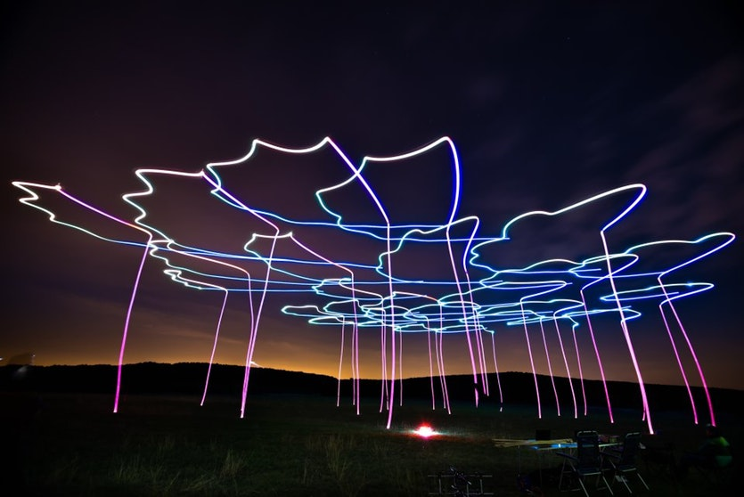
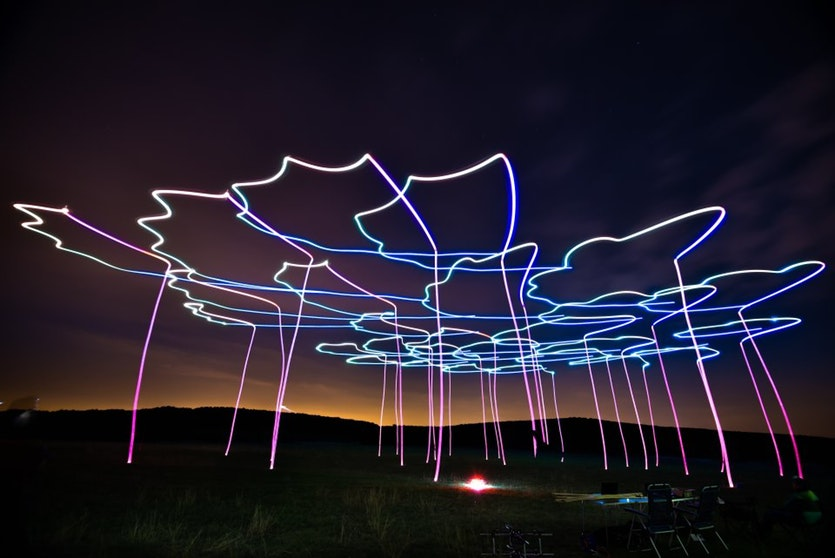
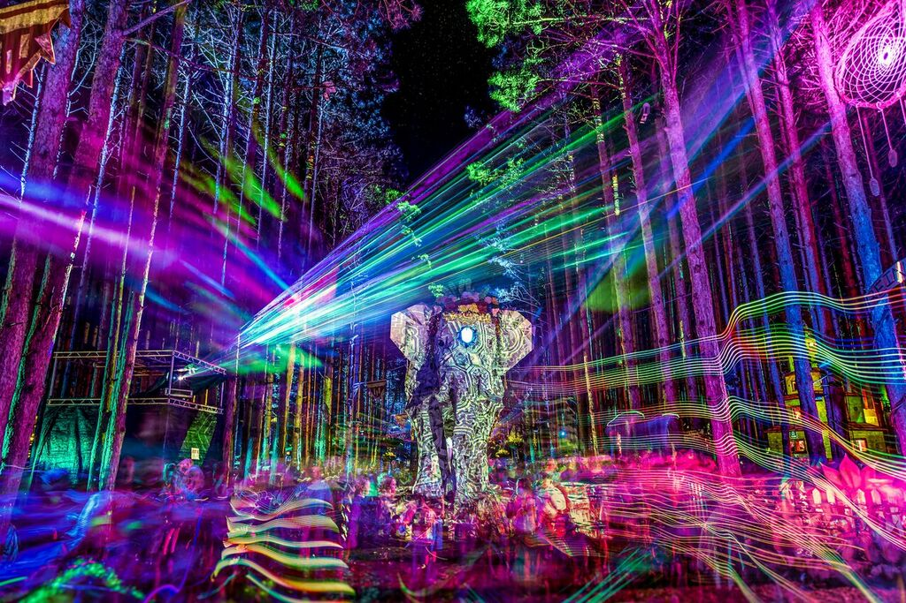
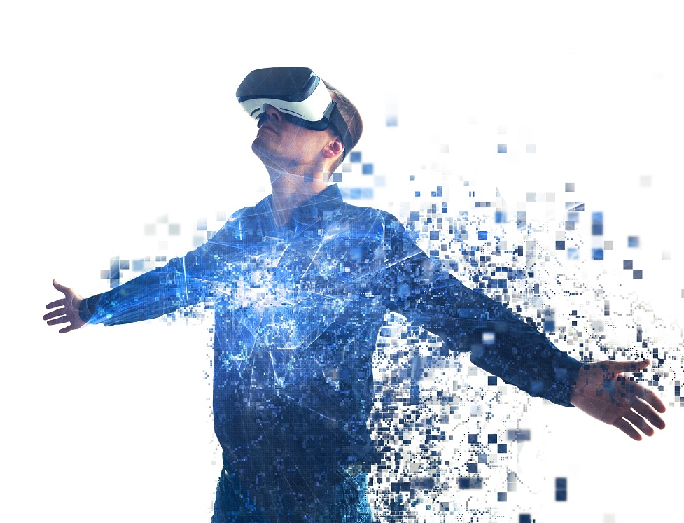

<h1>Blockchain.</h1>
Blockchain.
One of the most promising technologies since the advent of the Internet. it has the following features 1. Decentralized 2. Immutable and 3.Anonymous leading to blockchain having the capability of changing the way we interact, how digital information is stored and retrieved. Development is far outpacing efforts by regulators and courts to address the myriad of unique issues that the technology raises.
Bitcoin- 1st innovative payment network and new kind of payment system. Operates according to pre-defined rules and protocalls rather than the politics of traditional government backed currencies.
was the first decentralized virtual currency introduced in 2008 and also the first one which was successful. Bitcoin is known as being a "Peer-to-Peer Electronic Cash System" (P2P Network). it uses a consensus forming algorithm that processes and clears transactions on an immutable, shared ledger know as "blockchain".


Autonomous Things
Autonomous things(AuT)- emerging term for the technological developments that are expected to bring computers into the physical environment as AuT entities without human direction.
Driven by the likes of big data,AI and cloud technologies. Autonomous vehicles constantly collect data from their environment such as the road conditions, potential hazards, pedestrians, surrounding vehicles and even storing the routes and roads themselves. Examples of how autonomous things are being used are Intels use of a drone swarm for the opening ceremony of the winter olympic games in 2018, Dubais plan to use autonomous police vehicles that can deploy their own drones for surveillance and Hondas cooperative merger scenarios and other car manufactures in which vehicles communicate with one another to optimize traffic flows.
A look into the future: by 2021 swarm intelligence will be a core design element for at least 30% of organizations deploying AI enhanced systems and 10% of new vehicles will have autonomous driving capabilities compared to less than 1% currently.
 

Immersive Experience
Immersive Experience- an illusory environment that completely surrounds you such that you feel that you are inside it and a part of it.
Immersion cane broken down into 3 things 1.Visual quality 2.Sound quality 3.Intuitive quality
Visual Quality More than just resolution and frame rate , color accuracy, contrast and brightness are all critical elements. Pixel quantity involves resolution and frame work where as Pixel quality involves color accuracy contrast and brightness.
Sound Quality High resolution audio with samplimg rate and precision as well as sound integrity with 3D surround sound and clear audio .
Intuitive Interactions Natural user interfaces are seamless, responsive and accurate allowing them to provide the appropriate interface based on the user, device and application. There's also contextual interactions which are intelligent and personalized providing the right level of immersion based on context.
Virtual reality is the ultimate level of immersion its able to stimulate our senses with realistic feedback. The end-to-end approach is required for motion detection - visual processing - screen update. Heterogenous computing approach is needed in order for it to be successful. Immersive experience has become synonymous with 3 mysterious digital platforms - VR-Virtual Reality, AR-Augment Reality, MR-Mixed Reality. VR involves the digital worlds we step into, AR involves the digital layers over the top of the real and MR is a combination of both VR and AR.

